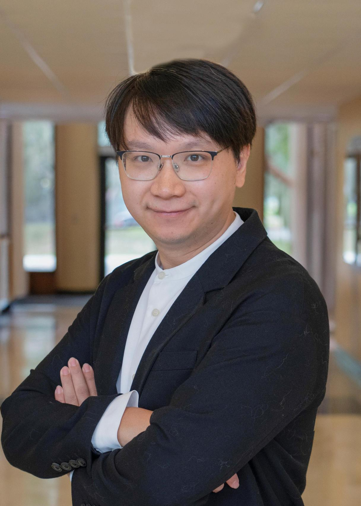

|  |
Xiaomin LinAssistant ProfessorUniversity of South Florida Electrical Engineering, USF [xlin2@usf.edu] [cv] |
I am a Tenure Track Assistant Professor. At USF, I am expanding research in Edge AI, perception enabled robotics, and intelligent systems for challenging environments, including underwater, agricultural, and healthcare domains.
I lead the new ERA Lab Embodied Robotics and Autonomy focusing on robotics, multimodal perception, and AI for challenging environments.
🌱🌟 I am actively recruiting PhD students to join my lab starting Fall 2025 and Spring 2026. I also welcome collaboration in robotics, AI, edge computing, and medical or underwater applications.
📬 If you are interested, please email me after reading my Research Statement
pdf with the subject line
[Interested in Joining ERA Lab USF].
I am also working in the Energy Efficient High Performance Computing Lab EEHPC at Johns Hopkins University as a postdoc with Dr. Tinoosh Mohsenin. My focus is integrating Large Language Models with knowledge graphs for advanced reasoning and decision making, and building efficient algorithms and frameworks for deployment on edge devices and robotics.
I received my PhD in Electrical and Computer Engineering from the University of Maryland advised by Prof. Yiannis Aloimonos. My research lies at the intersection of robotics and perception, with emphasis on autonomous underwater systems. I build frameworks for autonomous underwater vehicles to detect and map marine objects such as oyster beds and coral reefs using real and synthetic data, simulation based methods, and multimodal sensing.
I collaborate widely across marine robotics and AI, including Prof. Shahriar Negahdaripour Miami, Prof. Ioannis Rekleitis Delaware, Prof. Herbert Tanner Delaware, Dr. Nare Karapetyan WHOI, and Prof. Jane Shine Florida.
I also work with collaborators across biology, computing, and robotics such as Dr. Isla Duporge Princeton, Prof. Olga Isupova Bath, Prof. Michail G. Lagoudakis TUC, Prof. Markus Vincze TU Wien, Prof. Nitin Sanket WPI, Prof. Chahat Deep Singh Colorado Boulder, and Prof. Dongyi Wang Arkansas.
In Maryland, I have collaborated with Prof. Matthew Gray UMCES, Mr. Don Webster UMCES, Prof. David Akin, Prof. Miao Yu, Prof. Nikhil Chopra, Prof. Pratap Tokekar, Dr. Cornelia Fermüller, and Dr. Jason E. Spires NOAA.
At the 2024 Autonomous Systems Bootcamp, I led a team from eight institutions and companies, resulting in a joint publication on the Odyssee project [lin2024odyssee] as lead and corresponding author.
Awards include honors from ISR Honored Graduate, best paper for IROS workshop of control framework, and Best Poster at the Maryland Robotics Center Research Symposium.
Service includes Associate Editor and organizer roles across ICRA, IROS, and AAAI.